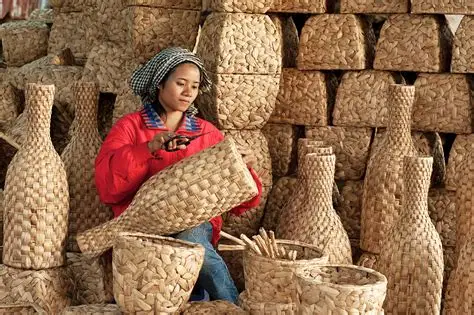
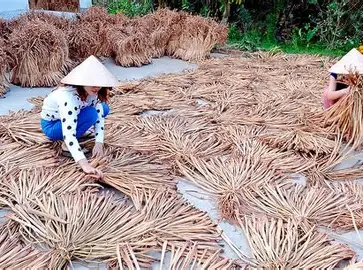
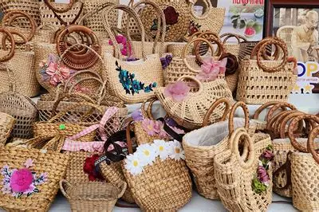

Lịch Sử Hình Thành
Rộ lên từ khoảng năm 2000 khi phong trào sử dụng sản phẩm thiên nhiên phát triển. Lục bình trên sông Hậu rất dồi dào, từ một loại "cỏ rác" gây cản trở giao thông, người dân đã biến chúng thành nguyên liệu sản xuất hàng xuất khẩu.

Bí Quyết Nguyên Liệu
Điểm mấu chốt là quy trình "phơi đủ 3 nắng" để sợi lục bình đạt độ dai tuyệt đối và màu vàng rơm sáng, cùng kỹ thuật đan tay "kín kẽ, đều múi" giúp sản phẩm giữ form chắc chắn, không bị biến dạng hay ẩm mốc.

Thành Phẩm Bắt Mắt
Thảm lục bình, giỏ xách, khay đựng đồ, đồ mỹ nghệ trang trí nội thất cho các khách sạn, resort.
